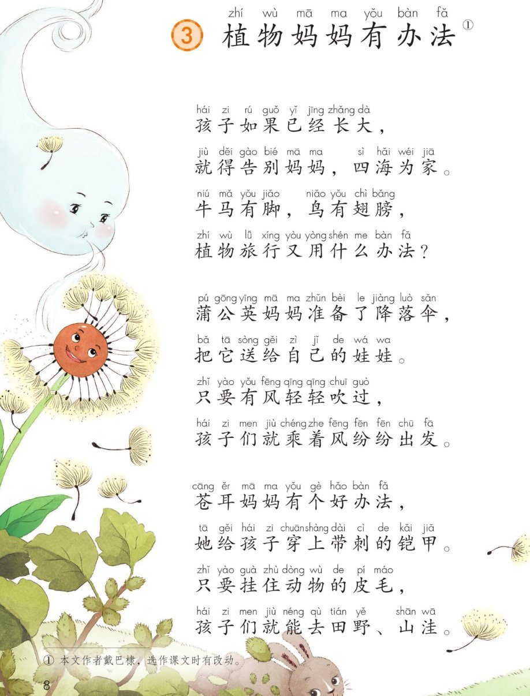
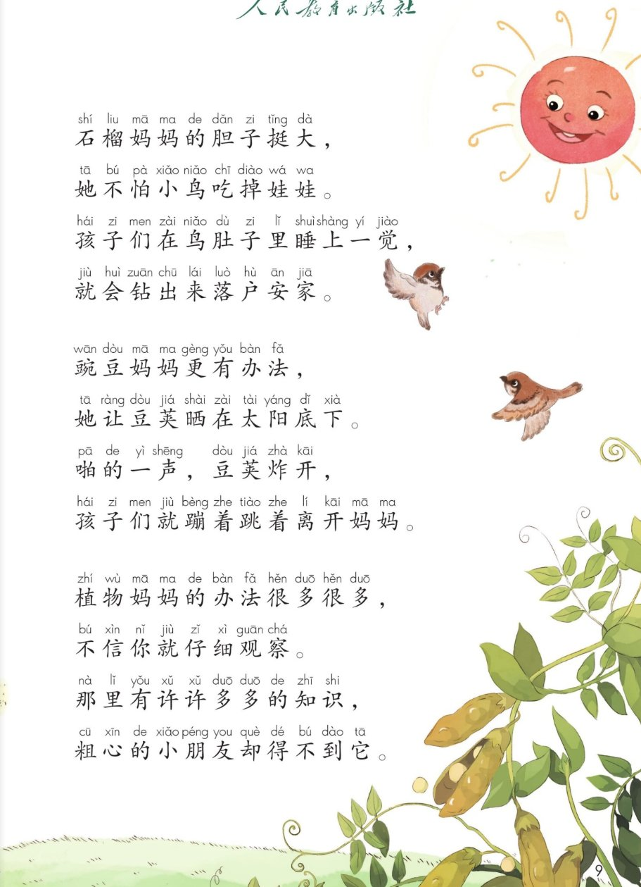
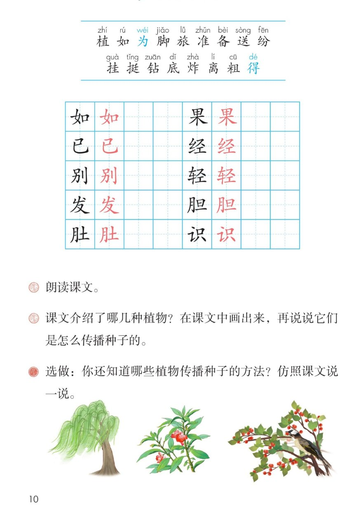

×
🔊 手机听不到声音怎么办？照这 3 步做
① 用
Edge 浏览器打开
www.jeepsh.cn（在微信里打开的点右上角「⋯ → 在浏览器打开」；没装 Edge 就到应用商店搜「Edge」安装）。
② 应用商店搜
「讯飞语记」安装 → 打开它 →
通用设置 → 语音合成设置 → 打开
「合成系统接口」和
「全局生效」两个开关 → 再选一个
中文发音人。
③ 系统语言设为
简体中文，点「
播放」试听能说中文后，
彻底关闭浏览器再重开（后台划掉），回到课件点读就有声音。
→ 打开声音自检
🌱 第 3 课《植物妈妈有办法》· 有声图文带读
统编版语文 · 第一单元·阅读 · 课本 P8~10 · 作者 戴巴棣
课文 6 个小节
会认字 17
会写字 10
听写词 8
近义词 4 组
深入理解 8 题
本课本领 仿照课文说一说
🎧 五步学（可随时点任意一句、一个字、一个词单独听）：
① 听读课文——一句一句读，读到哪一句哪一句发光；开「跟读」后读完一句留时间让你自己读。
② 学字词——17 个会认字、10 个会写字（含书写提示），点一个读一个。
③ 词语·听写·造句——听写 8 个词（读两遍→你写→报答案→听示范句），再听 4 组近义词辨析。
④ 深入理解——8 道题（认知 / 理解 / 运用 / 拓展），开放题答案不唯一，先想后看。
⑤ 讲一讲·分角色——说说植物妈妈的办法，再分角色读四位植物妈妈的话。
① 听读课文（点哪一句，读哪一句）点节前的 ①～⑥ 听整节
注音只标本课要认、要写的字，读音来自课本第 10 页生字表
🎤 朗读要求（老师标准）
① 读准字音，不添字、不漏字、不回读；
② 这是一首儿歌，要读得有节奏，每一行末尾稍停；
③ “植物旅行又用什么办法”是问句，末尾往上扬；
④ 读四位植物妈妈的话，读出亲切、自豪的语气；
⑤ “啪的一声”要读得短促有力。
①
孩子如果已经长大，
就得告别妈妈，四海为家。
牛马有脚，鸟有翅膀，
植物旅行又用什么办法？
②
蒲公英妈妈准备了降落伞，
把它送给自己的娃娃。
只要有风轻轻吹过，
孩子们就乘着风纷纷发出发。
③
苍耳妈妈有个好办法，
她给孩子穿上带刺的铠甲。
只要挂住动物的皮毛，
孩子们就能去田野、山洼。
④
石榴妈妈的胆子挺大，
她不怕小鸟吃掉娃娃。
孩子们在鸟肚子里睡上一觉，
就会钻出来落户安家。
⑤
豌豆妈妈更有办法，
她让豆荚晒在太阳底下。
啪的一声，豆荚炸开，
孩子们就蹦着跳着离开妈妈。
⑥
植物妈妈的办法很多很多，
不信你就仔细观察。
那里有许许多多的知识，
粗心的小朋友却得不到它。
🤔 想一想（点我可跳过）
课本的样子（点一张图，听读这一页）整页点读

第 8 页 · 课题与蒲公英、苍耳

第 9 页 · 石榴、豌豆与结尾

第 10 页 · 生字表与课后题
📖 人教版《语文》二年级上册 · 课本第 8~10 页 · 图片仅供个人学习，版权归人民教育出版社所有
② 会认字（17 个）点一个字，听读音、词语和课文里的句子
② 会写字（10 个）结构、部首、笔画与书写提示为通用规范，供参考，以教材和老师的指导为准
如
rú
如果 · 如今
6 画 · 左右（女）
女旁要窄，口要写正
果
guǒ
如果 · 水果
8 画 · 独体
上小下大，横要托住
已
yǐ
已经 · 早已
3 画 · 独体
竖弯钩要舒展出头
经
jīng
已经 · 经过
8 画 · 左右（纟）
绞丝旁要窄，右边匀称
别
bié
告别 · 别处
7 画 · 左右（刂）
左宽右窄，竖要直
轻
qīng
轻轻 · 年轻
9 画 · 左右（车）
车旁横变提，右边舒展
发
fā
出发 · 发现
5 画 · 独体
注意笔顺，末笔是点
胆
dǎn
胆子 · 大胆
9 画 · 左右（月）
月旁要窄，旦横要平
肚
dù
肚子 · 肚皮
7 画 · 左右（月）
月旁要窄，土横上短下长
识
shí
知识 · 认识
7 画 · 左右（讠）
言字旁要窄，右边匀称
③ 读一读，记一记（会写字组词）点一行，听读这一组词语
如如果 如今 比如
已已经 早已 曾经
轻轻轻 轻快 年轻
③ 听写（8 个词）读两遍 → 你在纸上写 → 报答案 → 听示范句
准备听写 · 共 8 个词
○ ○ ○
点下面的「开始听写」，听到一个词就写一个词。
③ 听写的词 · 造句示范点词听读，点句子听示范句，再自己说一句
1如果会写字
示范句：如果明天天气好，我们就去公园。
✏️ 我也能说：如果……就……，比如：如果下雨，我就带伞。
2已经会写字
示范句：我已经把作业写完了。
✏️ 我也能说：谁 + 已经 + 做了什么，比如：我已经吃过饭了。
3告别会写字
示范句：早上，我告别妈妈去上学。
✏️ 我也能说：谁 + 告别谁 + 去做什么，比如：我告别爷爷去学校。
4轻轻会写字
示范句：妈妈轻轻地关上门。
✏️ 我也能说：轻轻地 + 做什么，比如：他轻轻地走过来。
5出发会写字
示范句：天一亮，我们就出发了。
✏️ 我也能说：谁 + 什么时候 + 出发，比如：我们早上七点出发。
6胆子会写字
示范句：他的胆子真大，敢一个人走夜路。
✏️ 我也能说：谁的胆子 + 怎么样，比如：她的胆子很小。
7知识会写字
示范句：多读书能学到很多知识。
✏️ 我也能说：谁 + 从哪里 + 学到知识，比如：我从书里学到很多知识。
8粗心课文词
示范句：做作业不能粗心。
✏️ 我也能说：谁 + 做什么 + 不能粗心，比如：考试时不能粗心。
③ 近义词辨析（4 组）相同点 / 不一样在哪 / 各造一句
告别 — 分别
相同：都表示分开、离开。
不一样：告别强调临走时打招呼、说再见；分别强调分开、各自走开。
告别：早上我告别妈妈去上学。
分别：我们在车站分别了。
准备 — 预备
相同：都是事先做好安排。
不一样：准备更常用，指事前做好安排；预备多用在事情就要开始的阶段。
准备：妈妈准备了丰盛的晚饭。
预备：运动员在起跑线上预备。
连忙 — 赶紧
相同：都快、马上就做。
不一样：连忙是接着就做；赶紧是抓紧时间、别晚了。
连忙：听见叫声，他连忙跑过去。
赶紧：要下雨了，赶紧收衣服。
仔细 — 认真
相同：都表示用心、不马虎。
不一样：仔细侧重看得细、做得细；认真侧重态度端正。
仔细：他仔细地观察蚂蚁。
认真：我们要认真完成作业。
③ 词语拓展（说一说，记一记）
数量词一个降落伞 一身铠甲 一对翅膀 一只小鸟
动作词乘着风 挂住 钻出来 炸开
叠词纷纷 许许多多 轻轻 仔细
植物名蒲公英 苍耳 石榴 豌豆
反义词轻—重 粗心—细心 大—小
④ 深入理解（8 题 · 先想后看）标「答案不唯一」的题，说得有道理都对
认知课文介绍了哪几种植物妈妈？它们分别用什么办法送孩子旅行？
看解析
🤔 想一想
解析：
蒲公英：乘着风出发。
苍耳：挂住动物的皮毛。
石榴：小鸟吃掉后带到别处。
豌豆：豆荚炸开弹出去。
💡 读的时候把这四种植物和它们的办法一一对应起来记
认知蒲公英妈妈给孩子准备了什么？靠什么把种子送走？
看解析
🤔 想一想
解析：
准备的是降落伞，就是长着绒毛的种子。
靠风把种子送走。
风一吹，种子就纷纷出发。
💡 降落伞是打比方，把绒毛种子说成降落伞，很形象
理解苍耳妈妈的办法是什么？为什么说穿上带刺的铠甲？
看解析
🤔 想一想
解析：
办法：挂住动物的皮毛。
铠甲就是身上带小钩子的硬刺。
说铠甲，是因为又硬又有刺，像护身衣。
💡 打比方能让样子更清楚，读的时候想一想铠甲长什么样
理解石榴妈妈为什么不怕小鸟吃掉娃娃？
看解析
🤔 想一想
解析：
石榴籽外面有硬壳保护。
小鸟吃下去不容易消化。
跟着小鸟飞到别处，再钻出来安家。
💡 看起来是坏事，其实是石榴传播种子的好办法
理解豌豆妈妈用什么办法让孩子离开？啪的一声说明了什么？
看解析
🤔 想一想
解析：
办法：让豆荚晒在太阳底下。
豆荚晒干裂开，种子被弹出去。
啪的一声说明炸得又快又响。
💡 读啪的一声要读得短促响亮，像真的炸开
运用用“只要……就……”说说蒲公英或苍耳的孩子怎么旅行。
看解析
🤔 想一想
解析：
只要风一吹，蒲公英的孩子就乘着风出发。
只要挂住动物皮毛，苍耳的孩子就能去田野、山洼。
🌈 答案不唯一，用上“只要……就……”，句子通顺就好
运用仿照课文，说一种你见过的植物传播种子的办法。
看解析
🤔 想一想
解析：
椰子：靠海水漂到别处。
凤仙花：果实裂开把种子弹出去。
🌈 答案不唯一，说出一种植物 + 它的办法就很好
拓展课文最后说“粗心的小朋友却得不到它”，“它”指什么？你从中明白了什么？
看解析
🤔 想一想
解析：
它指植物传播种子的知识。
明白：要仔细观察，不能粗心。
🌈 答案不唯一，说出自己的体会就对
⑤ 讲一讲（植物妈妈的办法）按顺序说，再自己补充
💬 讲故事支架：蒲公英乘着风 → 苍耳挂住皮毛 → 石榴鸟肚里安家 → 豌豆豆荚炸开 → 植物妈妈的办法很多很多。
⑤ 分角色朗读（四位植物妈妈）点一个角色，听他（她）说的话
🌬️ 蒲公英妈妈
“蒲公英妈妈准备了降落伞……”
💬 要读出亲切、自豪的语气
🌰 苍耳妈妈
“苍耳妈妈有个好办法……”
💬 要读出神气、得意的语气
🍎 石榴妈妈
“石榴妈妈的胆子挺大……”
💬 要读出大胆、自信的语气
🥣 豌豆妈妈
“豌豆妈妈更有办法……”
💬 要读出响亮、活泼的语气
📖 旁白
“孩子如果已经长大……”
💬 要读出平稳、清楚的语气